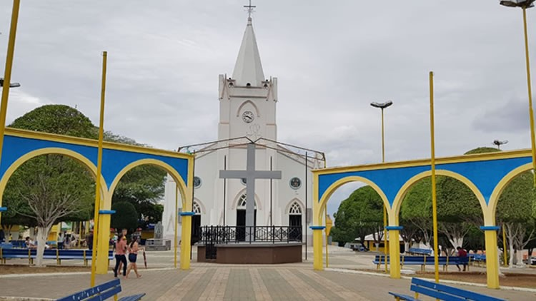
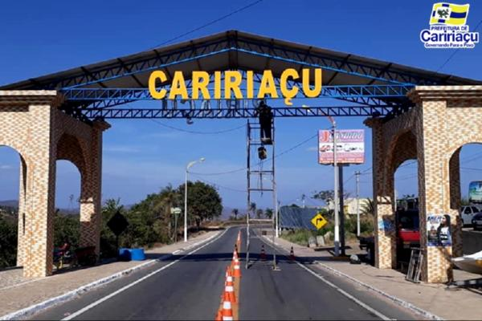

Geoinfos
Informações técnicas sobre relevo, população, IDH etc.
| INFORMAÇÕES | |
|---|---|
| Municípios limítrofes | Norte: Granjeiro e Várzea Alegre Oeste: Farias Brito e Crato Sul: Juazeiro do Norte e Missão Velha Leste: Lavras da Mangabeira e Aurora |
| Fundação | 18 de agosto de 1876 (144 anos) |
| Clima | Tropical quente subúmido |
| IDH | 0,578 — baixo |
| PIB | R$ 4 069,12 |
| INFORMAÇÕES TERRITÓRIAIS | |
|---|---|
| Número de habitantes | 26 965 habitantes |
| Superfície de Caririaçu |
63 735 hectares
637,35 km² (246,08 sq mi) |
| Densidade populacional | 42,3 ha./km² |
| Altitude de Caririaçu | 691 metros de altitude |
| Coordenadas geográficas decimais |
Latitude:
-7.04585
Longitude: -39.281 |
| Coordenadas geográficas sexagesimais | Latitude: 7° 2' 45'' Sul , Longitude: 39° 16' 52'' Oeste |
| INFORMAÇÕES DO MUNICÍPIO | |
|---|---|
| Endereço da Prefeitura Municipal de Caririaçu |
Caririaçu
Prefeitura de Caririaçu
Parque Recreio Paraíso, s/n CARIRIAÇU - CE, 63220-000 Brasil Work +55 88 3547-1122 Fax +55 88 3547-1122 |
| Telefone da prefeitura |
(88) 3547-1122
Internacional: +55 88 3547-1122 |
| Fax |
(88) 3547-1122
Internacional: +55 88 3547-1122 |
| Endereço electrónicoda prefeitura | Não disponível |
| Site oficial do município | caririacu.ce.gov.br |
| INFORMAÇÕES DO ADMINISTRATIVAS | ||
|---|---|---|
| Prefeito de Caririaçu | JOSÉ EDMILSON LEITE BARBOSA | |
| Partido politico | PDT | |
| INFORMAÇÕES DE TRANSPORTE | |
|---|---|
| Aeroporto |
Aeroporto Regional do Cariri
19.3 km
Aeroporto de Picos
247.9 km
Aeroporto de Paulo Afonso
285.7 km
|
| INFORMAÇÕES DE DISTÂNCIA A OUTRAS CIDADES | ||
|---|---|---|
| São Paulo : 1998 km | Rio de Janeiro : 1815 km | Brasília : 1354 km |
| Salvador : 665 km | Fortaleza : 379 km mais perto | Belo Horizonte : 1508 km |
| Manaus : 2341 km | Curitiba : 2306 km | Recife : 498 km |
| Goiânia : 1526 km | Belém : 1198 km | Porto Alegre : 2847 km |
| Guarulhos : 1977 km | Campinas : 1952 km | São Luís : 751 km |
| Distância calculada em linha reta! | ||
História
Conheça mais sobre a história da CARIRIAÇU.
História
Situada sobre a plataforma da serra, São Pedro do Crato, São Pedro do Cariri, São Pedro e, finalmente
Caririaçu tem sua provável origem vinda de Cariri, São Pedro e, finalmente Caririaçu tem sua provável origem
vinda “de Cariri ou Kiriri” sinônimo de taciturno, calado e assu sufixo aumentativo, que embora se escreva açu
ou assu indistintamente, a preferência vem sendo pelo primeiro sufixo, podendo ter sido os primeiros
habitantes da serra José Joaquim de Santana ou Miguel Cavalcante Campos, conforme depoimento do historiador
Irineu Pinheiro. Apresenta o município topografia acidentada. Foi principalmente habitado pelo índios cariris,
originários da região do Rio São Francisco que vinham a procura de terras férteis e clima ameno. O nosso solo
é um dos melhores para a agricultura especialmente a cultura do milho e da mandioca.
As festividade religiosas compareceram peregrinos de todas as comunidades adjacentes, numa desmonstração
eloquente de religiosidade e fé católica. Objetivando as comemorações do dia do município 18 de agosto de 1974
com vasta programação foi instituída a semana do município, uma das maiores festas da cultura da cidade
constando sempre com volumosa presença dos filhos da terra e de visitantes procendentes das mais diferentes
localidades da região.
Origem Topônimo: CARIRIAÇU – Palavra indígena composta de Cariri ou Kiriri (calado, taciturno) e Assú ou Açú
ou Guassú (sufixo aumentativo).
Formação Administrativa:
Distrito criado com a denominação de São José, por ato provincial de 11-05-1859 e por lei provincial nº 1362.
Freguesia criada com a denominação de São José, pela lei provincial nº 1632, de 09-11-1870.
Pela lei nº 1589, de 24-09-1873, a freguesia de São José passou a denominar-se Serra de São Pedro.
Elevado à categoria de vila com a denominação de Serra de São Pedro, pela lei provincial nº 1727, de
28-08-1876. Sede no núcleo de São Pedro, desmembrado de Crato.
Pela lei nº 1837, de 17-09-1879, a vila de Serra de São Pedro passou a denominar-se São Pedro do Crato. Sob a
mesma lei transfere a sede no núcleo de São Pedro para a povoação de Juazeiro. Sob a mesma lei acima citado a
vila é extinta, sendo seu território anexado ao município de Crato.
Elevado novamente à categoria de vila com a denominação de Serra de São Pedro, pela lei nº 2046, de
12-11-1883.
Pela lei estadual nº 589, de 24-07-1900, extinto novamente a vila de São Pedro do Crato, sendo seu território
anexado ao município de Crato.
Elevado novamente à categoria de vila com a denominação de Serra de São Pedro de Crato, pela lei nº 805, de
21-08-1905, desmembrado de Crato. Sede no antigo distrito de São Pedro de Crato. Constituído do distrito sede.
Reinstalado em 22-12-1905.
Em divisão administrativa referente ao ano de 1911, a vila aparece constituída de 2 distritos: São Pedro de
Crato e Junco.
Pela lei estadual nº 1541, de 27-08-1918, a vila de Serra de São Pedro passou a denominar-se São Pedro do
Cariri.
Pelo decreto estadual nº 193, de 20-05-1931, é extitno o município de São Pedro do Cariri.
Elevado novamente à categoria de município com a denominação de São Pedro de Cariri, pelo decreto estadual nº
1156, de 04-12-1933.
Em divisão administrativa referente ao ano de 1933, o município aparece constituído de 3 distritos: São Pedro
do Cariri, Bananeira e Junco.
Assim permanecendo em divisões territoriais datadas de 31-XII-1936 e 31-XII-1937.
Pelo decreto estadual nº 448, de 20-12-1938, o município de São Pedro do Cariri passou a denominar-se São
Pedro e o distrito de Junco a denominar-se Granjeiro. Sob o mesmo decreto é criado
o distrito de Santos. Criados com terras do extinto distrito de cidade do município de Juazeiro e ainda é
extinto o distrito de Bananeiras. Pelo decreto-lei estadual nº 1114, de 30-12-1943, o município de São Pedro
passou a denominar-se Cariaçu e o distrito de Santos a denominar-se Miragem. Em divisão territorial datada de
1-VII-1950, o município é constituído de 3 distritos: São Pedro, ex-São Pedro Cariri, Granjeiro ex-Junco e
Miragem ex-Santos.
Pela lei estadual nº 1153, de 22-11-1951, são criados os distritos de Feitosa e Miguel Xavier.
Em divisão territorial datada de 1-VII-1955, o município é constituído de 5 distritos: Caririaçu, Feitosa,
Granjeiro, Miguel Xavier e Miragem.
Pela lei estadual nº 3963, de 10-12-1957, desmembrado do município de Caririaçu o distrito de Granjeiro.
Elevado à categoria de município.
Em divisão territorial datada de 1-VII-1960, o município é constituído de 4 distritos: Caririaçu, Feitosa,
Miguel Xavier e Miragem.
Pela lei estadual nº 6510, de 05-09-1963, desmembrado do município de Cariaçu o distrito de Feitosa. Elevado à
categoria de município.
Pela lei estadual nº 6511, de 05-09-1963, desmembrado do município de Cariaçu o distrito de Miguel Xavier.
Elevado à categoria de município.
Pela lei estadual nº 6584, de 20-09-1963, desmembrado do município de Cariaçu o distrito de Miragem. Elevado à
categoria de município.
Em divisão territorial datada de 31-XII-1963, o município é constituído do distrito sede.
Pela lei estadual nº 8339, de 14-12-1965, o município de Caririaçu o adquiriu os extintos
municípios de Feitosa e Miguel Xavier e Miragem Em divisão territorial datada de 31-XII-1968, o município é
constituído de 4 distritos: Caririaçu, Feitosa, Granjeiro, Miguel Xavier e Miragem. Assim permanecendo em
divisão territorial datada de 2005.
Fonte:
IBGE
Pontos Turísticos
Saiba mais sobre os melhores lugares e o que fazer em CARIRIAÇU.
_Nome_Ponto

_Nome_Ponto

_Nome_Ponto

Fontes:
font1
font2
font3
font4
font5
Como Chegar?
Veja como chegar nos melhores pontos de CARIRIAÇU